Практичний досвід · журнал «ДентАрт» 2023 №2
Невідкладне лікування перелому моляра
Emergency treatment of a fractured molar
Непередбачувані ситуації виникають не за графіком… Вони просто виникають! У стоматологічній клініці досить часто доводиться мати справу з невідкладними випадками. Іноді, щоб позбавити болю, достатньо виписати антибіотик чи провести невідкладну пульпотомію, проте в інших випадках доводиться шукати рішення складнішої проблеми.
Ця молода пацієнтка звернулася в клініку з переломом верхнього правого першого моляра. Зуб 16 раніше був ендодонтично пролікованим, після чого коронку відновили за допомогою прямої композитної пломби. Унаслідок перелому мезіо-палатинальний горбик був втрачений, а лінія перелому розташована глибоко в ясенній борозні.
Ми вирішили подовжити клінічну коронку, провести повторне ендодонтичне лікування, реставрувати куксу за допомогою скловолоконного штифта, а потім встановити коронку. На жаль, ми не мали можливості перенести лікування, треба було щось робити негайно і без допомоги зубного техніка на етапі створення тимчасової коронки. Ось чому в клініці має бути самотвердіючий композит для виготовлення тимчасової реставрації для тривалого носіння.
Хід лікування
Передусім створили прямий композитний mock-up без використання адгезивних систем, щоб відновити форму моляра. Потім зняли альгінатний відбиток. Від'єднали клапоть, щоб хірургічним шляхом збільшити довжину коронки. Після накладання швів зуб ізолювали рабердамом. Стару реставрацію та частину каріозних тканин видалили. Провели дезобтурацію і повторне пломбування кореневих каналів.
Після повторного ендолікування зуб був готовий до створення кукси, цього разу — з використанням скловолоконного штифта, щоб зменшити ризик перелому, який уже не вдасться усунути. Посадкове ложе відпрепарували каліброваним дрилем на невеликій швидкості, потім підібрали волоконний штифт відповідного розміру (LuxaPost, DMG). Це дуже важливо, адже нам потрібен якомога менший простір між стінкою каналу та штифтом, але штифт має бути повністю пасивним.
Ми скористалися універсальним адгезивом подвійного твердіння LuxaBond Universal (DMG). Дуже велике значення має можливість активувати адгезив всередині каналу хімічним методом, адже навіть із прозорим штифтом не можна повністю покладатися на активацію світлом. Також треба ретельно наносити адгезив на зубні тканини, тож наполегливо рекомендуємо користуватися спеціальними маленькими щітками. Пам'ятаймо, що адгезія — найважливіший етап створення реставрації в адгезивній техніці! Якщо адгезія буде неякісною, неякісною буде і реставрація.
Для фіксації штифта і водночас нарощування зуба ми скористалися двокомпонентним композитом подвійного твердіння LuxaCore Z (DMG). Обрати матеріал, який ідеально для цього підходить, — дуже важливо. Нам потрібна як хімічна, так і фотоактивація, щоб матеріал можна було засвітити, а потім дати хімічному процесу завершити роботу. Нам також потрібен текучий матеріал, який добре замішується, з практичною та функціональною змішувальною канюлею, щоб не було бульбашок і порожнин. Також полімеризований матеріал має бути твердим, міцним і стійким, щоб підтримувати майбутню штучну коронку.
Після зняття рабердаму зуб вертикально відпрепарували для створення кукси. Вважаю, що дуже важливо, щоб реставраційний матеріал препарувався за відчуттями, як дентин, тому що так буде легше точно відпрепарувати куксу.
Надміцний самотвердіючий композитний матеріал LuxaCrown (DMG) ввели безпосередньо в альгінатний відбиток, потім, ізолювавши опору вазеліном, знову ввели ложку в ротову порожнину. Коли матеріал затвердів, зняли відбиткову ложку, легко відфінірували коронку, перевірили оклюзію і відполірували тимчасову коронку.
Через тиждень шви знято. Кілька місяців пацієнтка не мала нагоди до нас завітати. Через 10 тижнів після лікування можна побачити, як загоїлися піднебінні тканини (у місці перелому). Пацієнтка задоволена, а зуб перебуває у безпеці завдяки міцній тимчасовій коронці та чекає на постійну коронку з діоксиду цирконію.
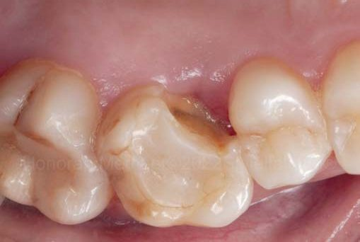
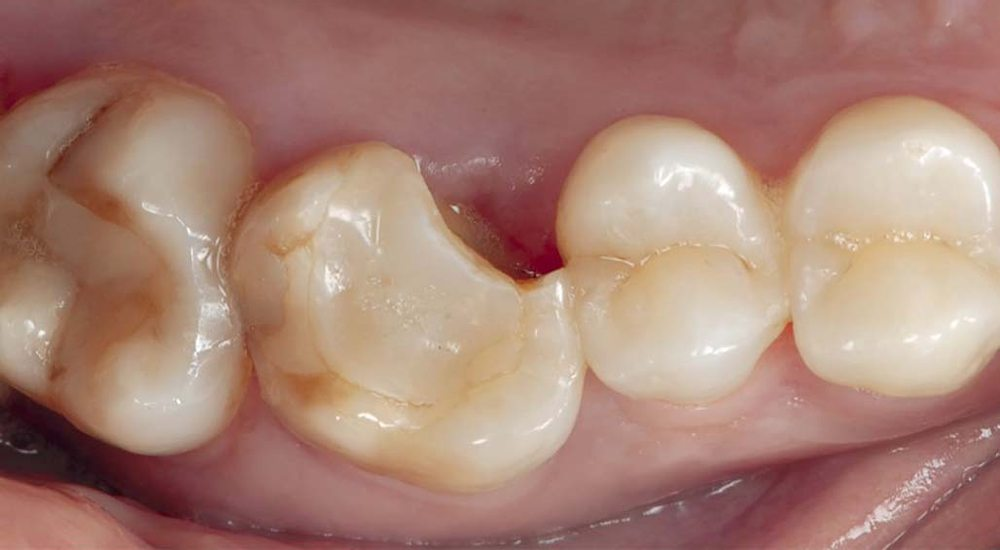
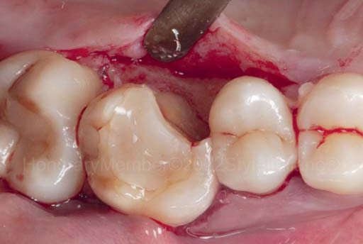
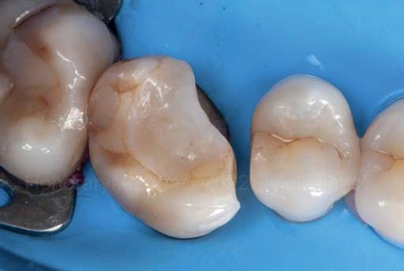
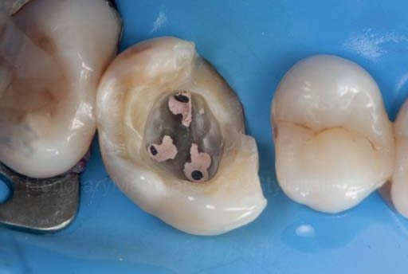
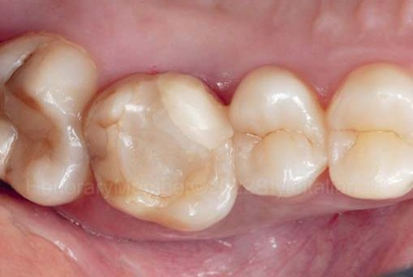
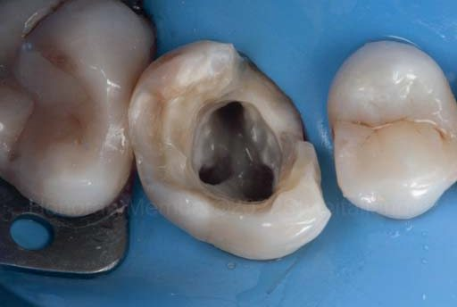
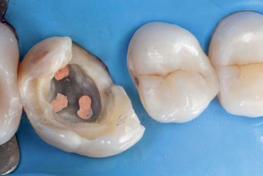
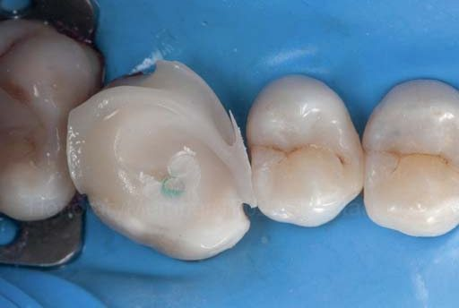
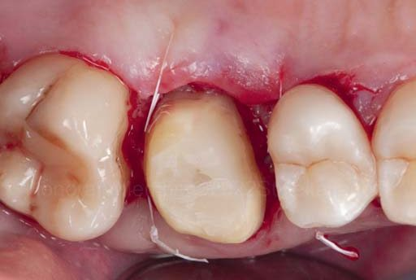
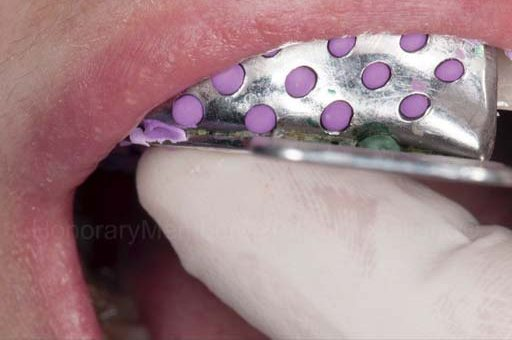
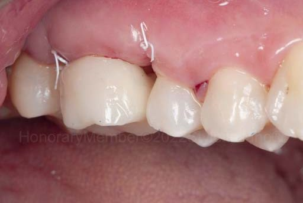
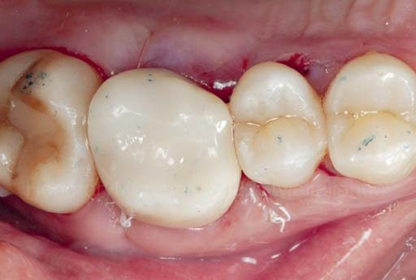
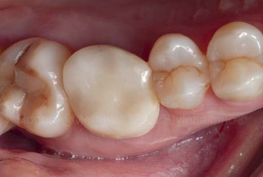
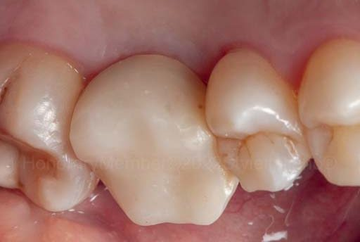
Фото лінії перелому (глибина дослідження зондом — 3 мм); прямий композитний mock-up і альгінатний відбиток; хірургічне подовження клінічної коронки та ізоляція рабердамом; дезобтурація і повторне пломбування кореневих каналів; фіксація волоконного штифта LuxaPost і створення кукси LuxaCore Z; препарування кукси; виготовлення тимчасової коронки LuxaCrown і вигляд оклюзійної поверхні; зняття швів через тиждень та контроль через 10 тижнів.
Висновки
За невідкладною допомогою пацієнти звертаються несподівано. Це зрозуміло. Наявність відповідних інструментів, матеріалів і опанованих методик є великою перевагою. У разі складного перелому зуба після ендодонтичного лікування може знадобитися повне препарування під коронку, тому добре, коли можна скористатися простою й ефективною системою для створення кукси за допомогою штифта та виготовлення міцної і стійкої тимчасової коронки у невідкладному порядку.
Література
- Goracci C., Ferrari M. Current perspectives on post systems: a literature review. Aust Dent J. 2011 Jun; 56(Suppl 1): 77–83.
- Monticelli F., Ferrari M., Toledano M. Cement system and surface treatment selection for fiber post luting. Med Oral Patol Oral Cir Bucal. 2008 Mar 1; 13(3): E214–221.
- Grandini S., Chieffi N., Cagidiaco M. C., Goracci C., Ferrari M. Fatigue resistance and structural integrity of different types of fiber posts. Dent Mater J. 2008 Sep; 27(5): 687–694.
- Juloski J., Fadda G. M., Monticelli F., Fajó-Pascual M., Goracci C., Ferrari M. Four-year survival of endodontically treated premolars restored with fiber posts. Randomized controlled trial. J Dent Res. 2014 Jul; 93(7 Suppl): 52S–58S.
- Juloski J., Apicella D., Ferrari M. The effect of ferrule height on stress distribution within a tooth restored with fibre posts and ceramic crown: a finite element analysis. Dent Mater. 2014 Dec; 30(12): 1304–1315.